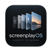
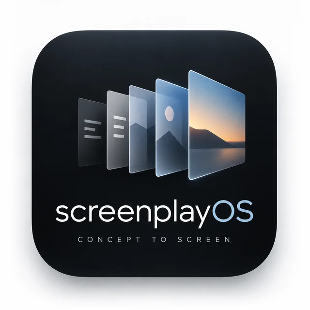
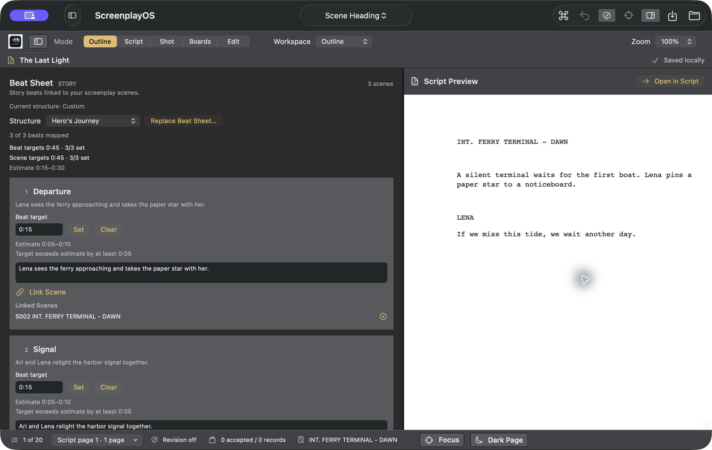
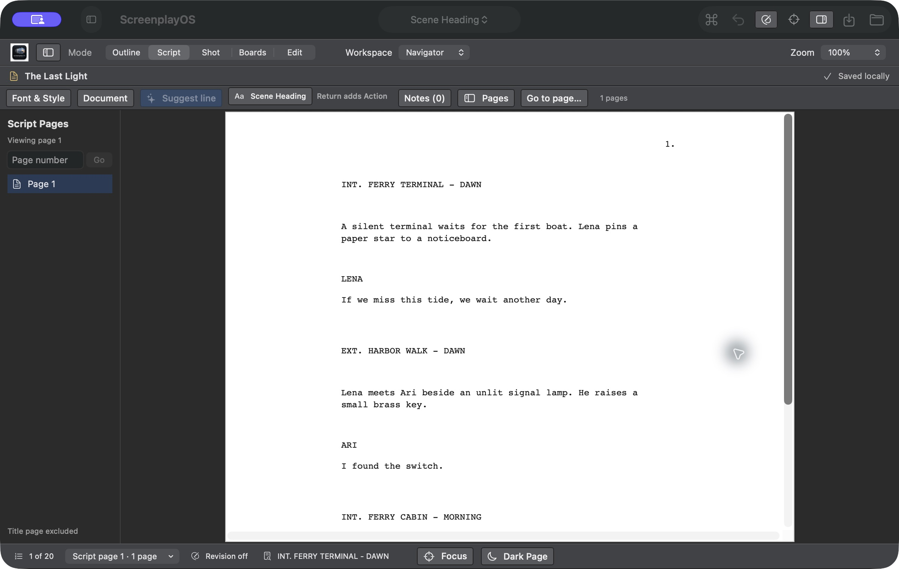
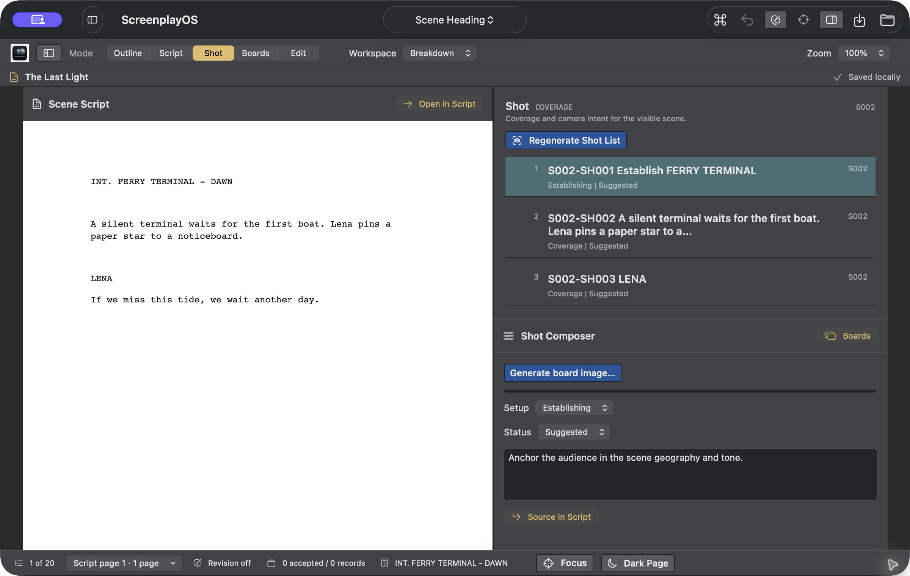
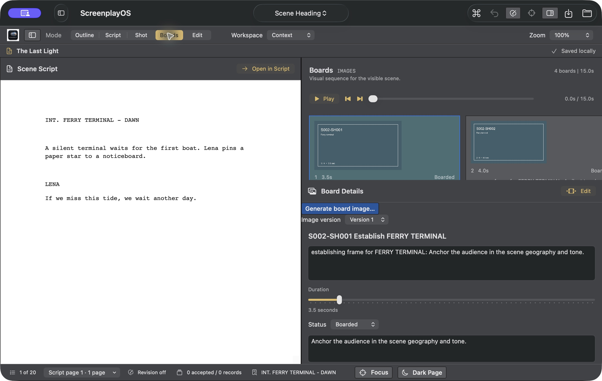
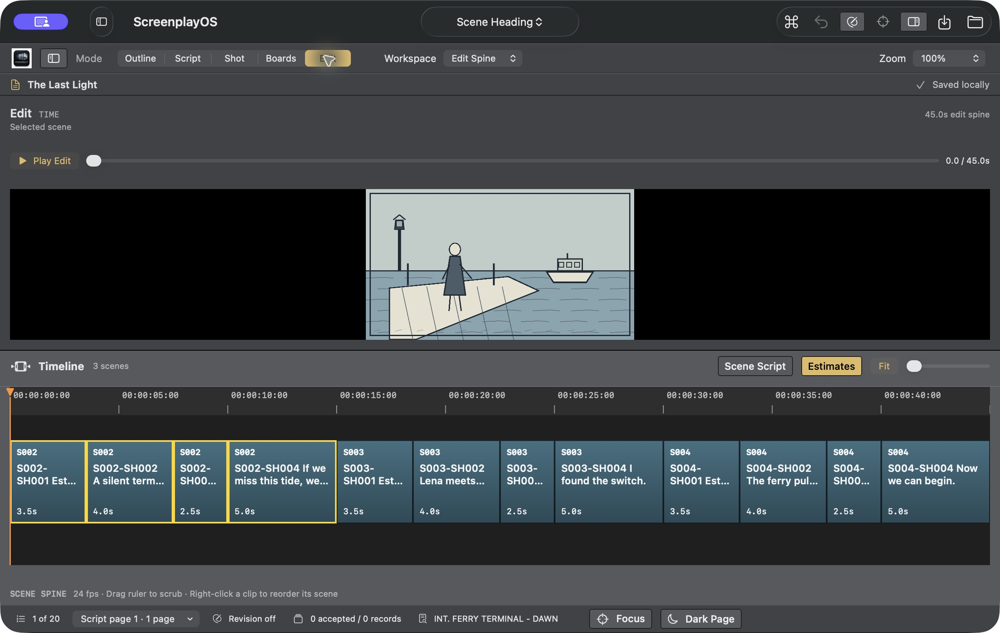

Planned for the cut
Scene time estimates and authored board durations help you judge rhythm before you shoot or generate a frame.

ScreenplayOSNATIVE FILMMAKING WORKSPACE FOR MAC · EARLY ACCESS BETA
Outline, write, break down shots, board, and play a timed animatic in one project—with optional AI dialogue suggestions and board image generation using your own provider key, only when you ask and after you preview what will be sent.
Works offline. No account required.

ONE PROJECT · FIVE VIEWS
Shape the story in beats and see estimated runtime as you plan.

Write in screenplay format; review each scene’s estimated screen time in Outline.

Break scenes into shots linked to their source script elements.

Build board frames from linked shots and set their durations. Optionally ask OpenAI to generate a board image with your Keychain-stored key after reviewing the editable prompt.

Play timed boards. Export a timed sequence that opens in Premiere Pro or Final Cut Pro, ready for real footage and sound.

Scene identity carries through every view. The export contains timing placeholders, not media.
WHY IT'S DIFFERENT
Scene time estimates and authored board durations help you judge rhythm before you shoot or generate a frame.
ScreenplayOS prepares timing guides for other tools. The current exports contain placeholders, so footage and sound remain in your editor.
Projects live on your Mac. Writing, outlining, and supported exports need no account or internet. AI is optional, invoked by you, with your provider key in the macOS Keychain. When you use AI, you choose the service and see exactly what is sent before anything leaves your Mac.
WHO IT'S FOR
For writers, directors, and producers making film, series, and animation, especially small teams working with AI-assisted pipelines, where one person may write the scene, plan the coverage, and cut the sequence.
EARLY ACCESS
Enter your email and confirm it to open the current Mac download. You'll also receive occasional product notes and, when available, founding-member pricing.
Running a production and want to use it on real work? Write to hello@screenplayos.com about becoming a design partner.
GET STARTED
Confirm your email address to open the current signed and Apple-notarized Mac build.
Version 0.1.4 (27) · October 2026 · Universal (Apple Silicon and Intel) · macOS 13 or later
Run shasum -a 256 ScreenplayOS-0.1.4.dmg and compare the result:
9eaf5b2b40f1df15918963287dc773513411afc8187e63f4d3bc4006c03f2e41COMPATIBILITY
Universal for Apple Silicon and Intel Macs, requiring macOS 13 or later.
Screenplay export includes PDF and Final Draft (.fdx).
PRIVACY
Your screenplays are stored on your Mac. Content reaches an AI provider only when you choose an AI feature and is processed under that provider's terms. Provider keys stay in the macOS Keychain.
This site uses no analytics or third-party trackers. If you join the email list, we send your email address and IP address to Buttondown to deliver the confirmation, prevent spam, and send occasional ScreenplayOS updates. Open and click tracking are off; Buttondown may process operational data under its privacy policy. You can unsubscribe at any time. Hosting providers may retain standard server logs.